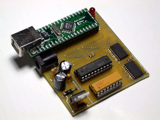
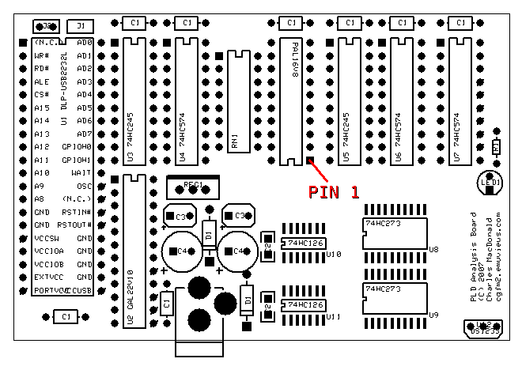
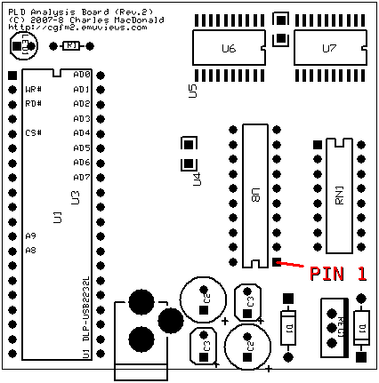
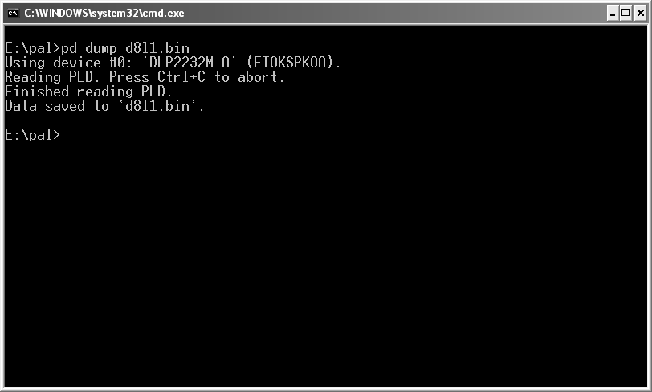
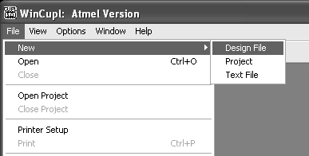

Use the information presented within at your own risk.
Some steps will involve modifying your operating system's settings,
adding devices to your computer, and handling of electronic components.
Please take all proper precautions necessary.
You'll need to provide the following:
USB cable"A"-type male connector to "B"-type male connector.
DC power supplyOnly use a +9V DC regulated power supply, around 800mA. The power jack accepts a 2.1mm male connector, negative tip, positive sleeve.
This is identical to the power supply used in the Sega Master System.
I would recommend plugging it into a power strip with a switch so you can easily turn the PAL reader on and off.
The PAL analysis hardware and software supports programmable logic devices, either PAL or GAL, that conform to the 16V8 pinout, that is:
Programmable logic devices primarily come in two types: combinatorial or registered. Only combinatorial devices are supported.
Any PAL with an "L" in its device name, such as PAL16L8, PALCE12L4, is combinatorial only.
Any PAL with an "R" in its device name, such as PAL16R8, PALCE12R4, is is registered or a partially registered/combinatorial. These are NOT supported
Any PAL with an "V" in its device name, such as GAL16V8 can be configured as combinatorial, registered, or partially combinatorial/registered. Only combinatorial configurations are supported
16V8 and 18CV8 devices are a superset of the PAL architecture and can be programmed to be combinatorial and/or registered. The analysis software will try to detect the attributes that a registered PAL would have, and warn you if it suspects the PAL is configured as registered.
One way to determine if a 16V8-type PAL is registered is to examine its connections on the PCB. All registered PALs use pin 1 exclusively as a clock input, and pin 11 exclusively as an active-low output enable. A common scenario for registered PALs is to have pin 11 tied to ground so the outputs are permanently enabled. Pin 1 may be tied to a nearby clock signal, though it isn't always easy to tell.
18CV8 devices, depending on how they are programmed, may not be detectable as being registered even when they are.
If you have an older FTDI driver installed, you may need to uninstall it.
Select "Add/Remove Programs" from the Control Panel, look for "FTDI USB Serial Converter Drivers", and choose "Change/Remove":

After it has been uninstalled, ensure no devices using FTDI chips are plugged in.
Then reboot your computer.
Download the appropriate driver archive from FTDI's "D2XX Direct Driver" page:
For example, if you are running Windows XP you'd want "CDM 2.04.06 WHQL Certified.zip" driver package.Turn the power OFF before removing or inserting PALs into the reader.
To remove a PAL that is in the socket, insert a small flathead screwdriver underneath the chip and twist the handle gently to pry it up slightly.
The socket has a recession underneath the chip to facilitate this.
Repeat the procedure on both ends until it is fully disengaged.
Always be very careful when removing or inserting PALs to prevent pins from being bent or damaged.
It's too bad they don't make ZIF sockets this small.
Insert the PAL with the pin 1 indicator (notch) facing towards the USB and DC power jack.
Always make sure the PAL is inserted correctly or else it may be damaged.
Double check that the orientation of the PAL is correct.
Revision 1 Hardware

Revision 2 Hardware

Note the location of pin 1 and the orientation of the socket.
Open up a command prompt and go to the directory that contains the pd.exe program. Then apply power to the PAL reader.
Windows may take a few seconds to recognize the device, and during that time the application will report that there are no devices present.
When ready, type "pd dump <filename.bin>" and press Enter.

The reading process will begin and a progress indicator will be displayed.
It will only take a few seconds to read the PAL.
I would advising choosing a filename that is the same as the part number of your PAL.
In this example, the PAL was stamped with "D8L1".
Now you have a binary dump of the PAL state. This is not a copy of its internal contents, but a collection of every possible output the PAL can generate for every possible given input.
The data needs to be analyzed to determine how the PAL was programmed.
WinCUPL will be used to generate fusemaps for creating replacement PALs, and minimizing CUPL equations down to more manageable sizes.
Download and install Atmel's WinCUPL software:
The software is free, but you will have to register in order to download it.Launch WinCUPL by double clicking on the WinCUPL icon on the desktop.

Erase the existing text in the edit window. Now we have our template for a PAL design created.
Note the path and filename shown in the edit window's title bar,
this is where the output from this project will be written to.
Select Options > Compiler > Output Files tab.
Check the checkboxes as shown.
Select Options > Compiler > General tab.
Check the checkboxes as shown.
NOTE: Make sure "Secure Device" is not checked.
Select Options > Compiler > Minimization tab.
I would suggest Expresso and then Quine-McCluskey if that doesn't produce the kind of results needed.
Change the settings based on what device you are trying to fit the design into.
Change the settings based on what device you are trying to fit the design into.
Don't select "Keep XOR Equations" unless you are targeting a device with XOR gate support (PAL16X8, etc.)
To analyze the contents of the data that was read, type "pd analyze <filename.bin>" and press Enter. The output will be written to stdout, so you may want to redirect it to a text file of the same name as the device. Use the PLD extension, this is the file extention for CUPL source code files.

You can open the file in a text editor to examine the results. Here is the sample output:
/* Data source: d8l1.bin Device configuration: complex Suggested GAL16V8 device type for WinCUPL: g16v8ma Summary of bidirectional pins: Pin 19 (B7) : Output. Pin 18 (B6) : Output. Pin 17 (B5) : Output. Pin 16 (B4) : Output. Pin 15 (B3) : Output. Pin 14 (B2) : Input. Pin 13 (B1) : Input. Pin 12 (B0) : Output. */ Name d8l1; PartNo ; Date ; Revision ; Designer ; Company ; Assembly ; Location ; Device virtual; /* Dedicated input pins */ pin 1 = I0; pin 2 = I1; pin 3 = I2; pin 4 = I3; pin 5 = I4; pin 6 = I5; pin 7 = I6; pin 8 = I7; pin 9 = I8; pin 11 = I9; /* Input and/or bidirectional pins */ pin 13 = B1; pin 14 = B2; /* Unused input */ /* Dedicated output pins */ pin 12 = B0; pin 15 = B3; pin 16 = B4; pin 17 = B5; pin 18 = B6; pin 19 = B7; /* Output and output enable equations */ !B7 = I0 & I1 & !I2 & I3 & !I4 & !I5 & !I6 & !I7 & !I9; !B6 = I0 & I1 & !I2 & I3 & !I4 & !I5 & I6 & !I7 & !I9; !B5 = I0 & I1 & !I2 & I3 & !I4 & I5 & !I6 & !I7 & !I9; !B4 = I0 & I1 & !I2 & I3 & !I4 & I5 & I6 & !I7 & !I9; !B3 = I0 & I1 & !I2 & I3 & I4 & I5 & I6 & !I8 & !I9; !B0 = !I0 & !I1 & !B1 # I0 & !I1 & !B1 # !I0 & I1 & !B1; /* End */
The PLD file contains a set of equations that represent the PAL logic and configuration in a format called CUPL. You can add "C"-style comments to the file, by prefixing a single line comment with // and enclosing a multi-line comment with /* ... */.
The equations are series of statements joined with '#'. Notice that pins B3-B7 have a one line equation each, and pin B0 is a multiple line equation. Some equations can have just one line, or several lines, or several thousand lines.
The CUPL file is the important part that describes how the PAL works. Fusemaps do not convey this information in a human-readable form, and they are tied to specific devices whereas CUPL presents the information in a more generic way. This also means the CUPL source can be used to fit the design that into other PALs or GALs if needed.
You can and should document your work. Add comments to the file, including details such as:
You can add comments ot a CUPL file, such as what is present at the top of the output. I would strongly advise adding your own notes, this will help other people working with the same hardware to understand what the CUPL source code corresponds to.
For example, this is how the above sample could be edited:
/*
Source device:
MMI PAL16L8, PDIP-20, stamped with "D8L1".
Present at location IC20 on a Capcom CPS-2 "A"-board.
Data source:
d8l1.bin
Device configuration:
complex
:
etc.
*/
And don't just stop there. Now that you know how the PAL is configured, trace out the connections on the PCB. Write down the other components the PAL connects to. The PAL equations themselves are worthless without knowing how the PAL is connected to other hardware on the board. This is not the case with EPROMs and PROMs which sometimes are self-explanatory.
You may have analyzed a PAL dump and seen a warning at the start of the output that is similar to the following:
/*
WARNING: The following pins MAY be registered:
Pin 19 (B7)
Pin 18 (B6)
Pin 17 (B5)
Pin 16 (B4)
Pin 15 (B3)
Pin 14 (B2)
Pin 13 (B1)
Pin 12 (B0)
Analysis results WILL NOT be correct for registered devices.
:
etc.
This means that during analysis, the utility found that one or more bidirectional pins had the attributes that a registered PAL would have. While this should be taken as a strong indication that the PAL is configured for registered operation, if you know for a fact that it is not, then consider this warning to be incorrect.
The purpose of this warning is to help identify registered PALs which are unlabeled, or are similar to the 16V8 type which can be configured to be combinatorial or registered.
You should attempt to minimize any multi-line equation.
Here's the output from a PLD dump that is a candidate for minimization.
!B0 = !I0 & !I1 & !B1 # I0 & !I1 & !B1 # !I0 & I1 & !B1;
To minimize this equation, follow these steps:

Now open up the .SIM file which is in the same directory as the .PLD file,
this directory is listed in the title of the editor window.
For example, if your PLD file is "ROM1.PLD", the SIM file is "ROM1.SIM".
Near the bottom of the file, there is a section enclosed in "%EQUATION" and "%END".
Within this area are the minimized equations.
Here's one of them:
!B0 =>
!B1 & !I0 & I1
# !B1 & !I1
You should cut and paste this in place of the larger set of equations that are in your .PLD file,
in this case replacing the set of equations for B0.
Notice that the syntax isn't quite right for CUPL; change "=>" to "=" and add a semicolon at the end of the last line:
!B0 =
!B1 & !I0 & I1
# !B1 & !I1;
Try compiling it again (F9). If there are no errors, you have successfully replaced the original set of equations with the minimized ones.
This wasn't much of a reduction, just three lines down to two. However it's possible to have output that has hundreds of thousands of lines, and those can often be minimized to just a few lines as well.
Some pointers:
Create a new project as shown in the WinCUPL tutorial.
Cut and paste the output from your PLD file into the editor window.
Select Run > Device Dependant Compile (or press F9).
It should compile successfully with no errors.
Now we need to "fit" the PAL design into a target device. Typically any modern replacement of an older device will be with a GAL16V8, because it's reprogrammable, inexpensive, and functions as a superset of all previous PAL architectures.
The PLD file has a suggested device type, though the actual device is set to virtual:
/*
Data source:
d8l1.bin
Device configuration:
complex
Suggested GAL16V8 device type for WinCUPL:
g16v8ma
:
Edit the "Device virtual;" line in the source code to replace 'virtual' with the suggested device type, or whatever other device you are intending to use. Atmel's documentation lists which devices are supported by WinCUPL.

Now try a device dependant compile again and see what happens (Run > Device Dependant Compile or F9).
If compilation is successful, you will now have a JEDEC fusemap with the same filename as your project's name with a .JED extension, located in the same directory as your project files. This directory is printed in the title of the source code pane of WinCUPL, and is 'c:\wincupl\wincupl\rom1.jed' in my example screenshots. The .JED file can be programmed directly to a GAL16V8 part.
I would strongly recommend dumping the replacement PAL you made and compare the new dump to the original device dump. You can do this in DOS by typing:
fc /b oldfile.bin newfile.bin
This is important as an imporoperly programmed PAL could damage the circuit it's plugged into. The PAL analysis board can handle any type of PAL programming so it will always be safe to read a PAL in it for verification.
Check the following:
Run USBView and look for an entry called "USB Composite Device" which has an idVendor field set to Future Technology Devices International Limited
If you can't find it listed, you should uninstall and reinstall the FTDI device driver.